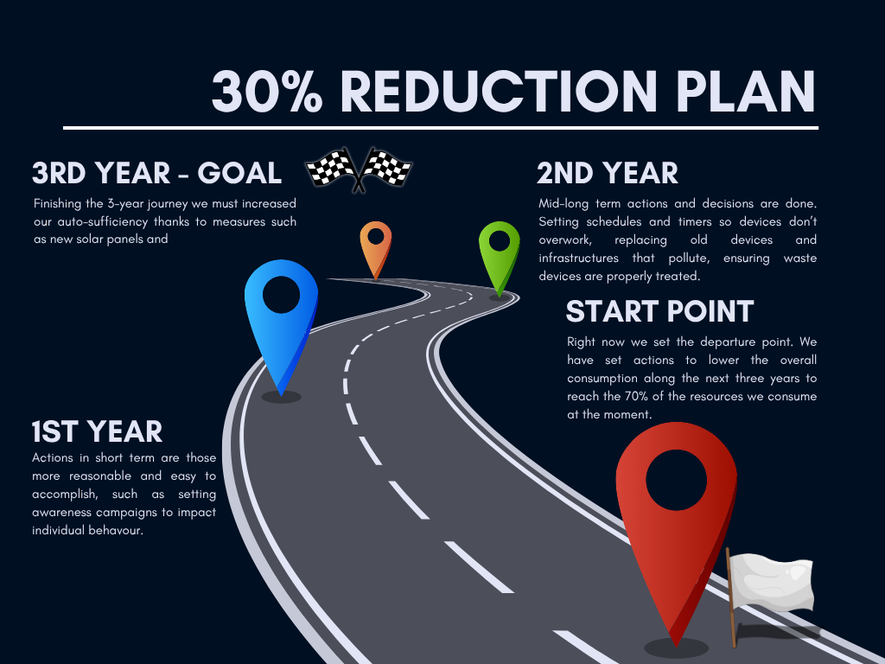

This section explains in depth how the reduction measures work...

How the reduction model works
Each category has 5 measures with different impact.
The user selects the measures they want to apply.
The calculator applies the combined reduction (up to 70%).
Implementation timeline
Year 1 – Quick Wins and Immediate Behavioral Changes
During the first year, the focus is on simple, low‑cost actions that deliver fast results. These measures rely mainly on awareness, small adjustments, and eliminating unnecessary waste.
Electricity
Launch awareness campaigns encouraging staff to turn off lights, screens, and equipment when not in use.
Set all computers, monitors, and printers to energy‑saving mode.
Adjust HVAC settings to recommended efficient temperatures (26 °C in summer, 20 °C in winter).
Replace the most frequently used bulbs with LED alternatives.
Reduce paper consumption by promoting digital workflows.
Set all printers to double‑sided, black‑and‑white printing by default.
Reuse folders, binders, and existing materials before purchasing new ones.
Implement basic inventory control to avoid unnecessary purchases.
Cleaning & hygiene products
Begin replacing the most harmful chemical products with eco‑friendly alternatives.
Train cleaning staff to optimize product quantities and avoid overuse.
Introduce refillable dispensers to reduce single‑use packaging.
Year 2 – Optimization, Upgrades, and Progressive Replacement
In the second year, the organization moves toward medium‑impact actions that require some investment and operational changes. The goal is to optimize systems and replace outdated equipment.
Electricity
Install motion sensors in hallways, bathrooms, and shared spaces.
Replace entire lighting fixtures with high‑efficiency LED systems.
Add timers to HVAC systems and auxiliary equipment.
Replace old appliances and devices with A++ or higher efficiency models.
Water
Install automatic sensor‑based faucets in high‑use areas.
Implement greywater reuse systems for cleaning tasks.
Replace old toilets with low‑consumption models.
Optimize cleaning routines to reduce water usage.
Office supplies
Replace old printers with low‑energy, high‑efficiency models.
Switch to 100% recycled paper for essential printing.
Centralize purchases to reduce packaging and transport emissions.
Introduce departmental monitoring of office supply consumption.
Cleaning & hygiene products
Fully transition to biodegradable cleaning products.
Purchase cleaning products in bulk to reduce packaging waste.
Adjust cleaning frequency based on actual space usage.
Introduce reusable microfiber cloths and mops.
Year 3 – Structural Improvements and Long‑Term Self‑Sufficiency
The third year focuses on high‑impact, long‑term investments that significantly reduce consumption and increase autonomy. These actions complete the path toward the 30% reduction target.
Electricity
Expand the solar panel system (doubling the current capacity) to increase energy self‑sufficiency.
Install battery storage systems to maximize self‑consumption.
Replace HVAC systems with high‑efficiency heat pumps.
Implement real‑time energy monitoring across the entire facility.
Water
Install a rainwater harvesting system for cleaning and irrigation.
Replace old or inefficient piping to prevent losses.
Add water‑consumption monitoring by zones or departments.
Install compact filtration units to enable internal water reuse.
Office supplies
Move toward a nearly paperless workflow using digital signatures and electronic archiving.
Replace old furniture with durable, recycled, or circular‑economy materials.
Implement a circular purchasing system (reuse, refurbish, recycle).
Reduce non‑essential consumables by up to 80%.
Cleaning & hygiene products
Introduce steam‑based cleaning systems to reduce chemical and water use.
Use only certified eco‑friendly cleaning products.
Replace all disposable containers with internal refill systems.
Finalize process optimization to achieve a 30% reduction in total product consumption.